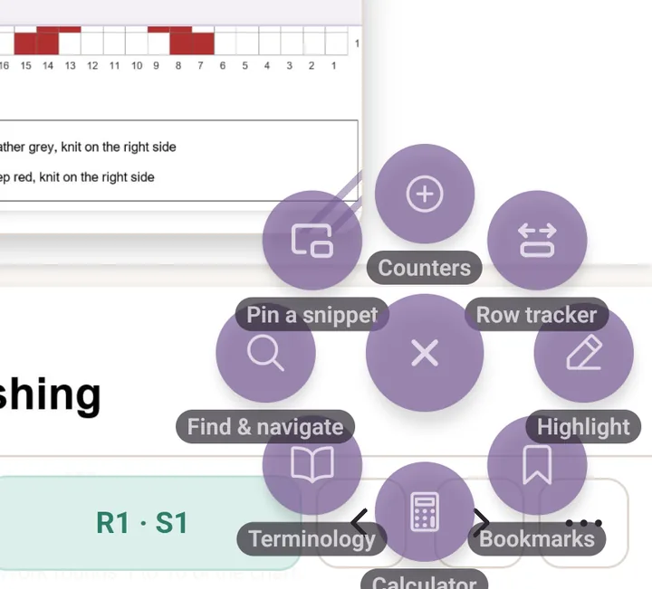
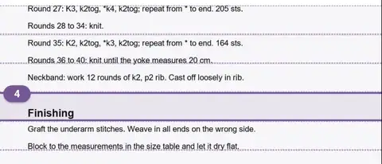
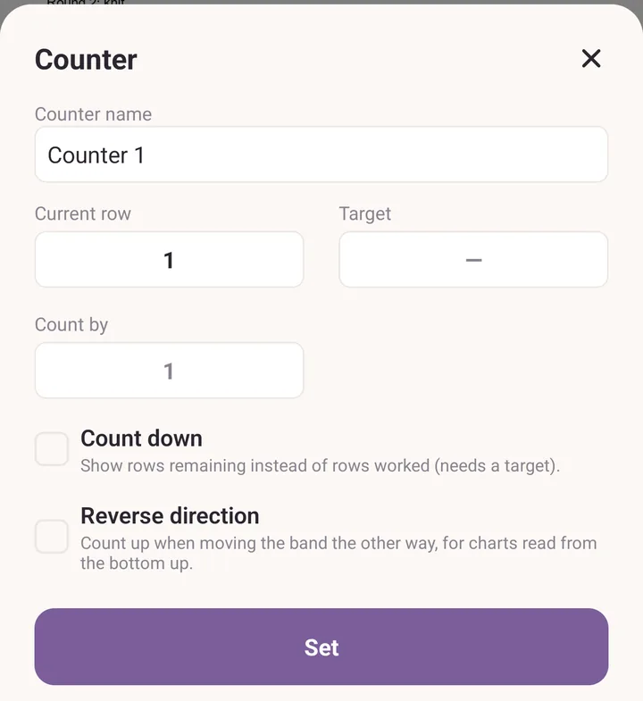
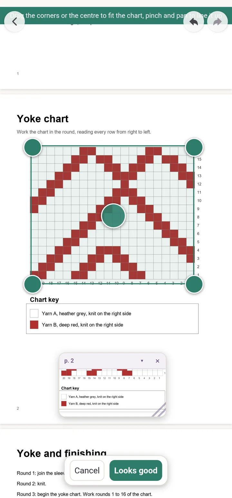
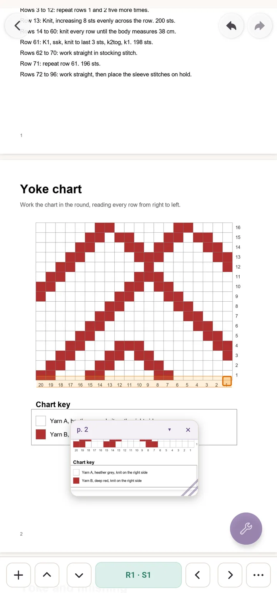
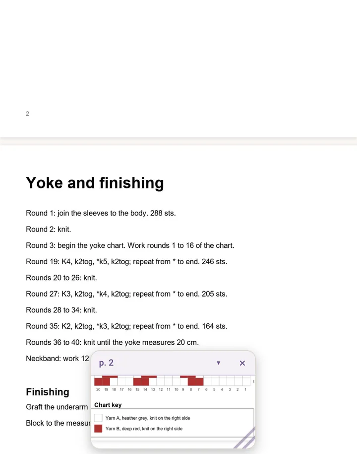

Tutorial: read a pattern
At the end of this you will have a PDF pattern that keeps your place row by row, a colourwork chart inside it that you can follow stitch by stitch, and the chart key floating on screen while you scroll.
Before you start: have a PDF pattern on your device, in Files, Drive, Downloads or anywhere else you can pick from.
1. Track a PDF row by row
Tap Patterns, then Import, and pick your PDF.
Tap the pattern card, then tap Open.
Tap the round floating button, then tap Row tracker.

Eight tools, each with its name under it. Row tracker is the one you want. The Trackers sheet opens because there is nothing to follow yet. Tap Row counter.
Drag the band onto the row you are working. The two buttons right of the row number make the band shorter or taller.

Drag the band by its middle. The faint guide lines help you line it up. Use the up and down arrows on the bar to step rows. Down moves to the next row and counts up.
Tap the row number to open Counter if you want to name it or set a Target, so it reads 24 / 60 as you go. The rest, including row reminders, is in PDF tools.

2. Follow a chart printed in the PDF
Tap the plus at the left of the tracker bar to open Trackers.
Tap Chart.
Drag the corners and the centre of the box until it sits exactly over the printed chart. Pinch and pan the page underneath to line it up.
Tap Looks good.

Only the corners and the centre grip take your finger. Everything else still pans and pinches. The Chart tracker sheet opens. Fill in Stitches across and Rows, and tap the corner where row 1, stitch 1 begins under Starting corner. Knitting flat? Tick Rows alternate direction as well. Tap Save grid.
The bar now reads R1 · S1 and one cell on the page lights up. The side arrows step stitches, the up and down arrows step rows, and the readout says Complete at the last cell.

3. Keep the chart key on screen
- Tap the floating button, then Pin a snippet.
- Frame the key with the corner handles, pinching and panning the page to get it inside the frame.
- Tap Looks good.
- The key now floats over the pattern wherever you scroll. Drag it by its header, resize it from the bottom right corner, and tap the arrow in the header to collapse it to a slim pill when it is in the way.

If it goes wrong
- The band draws a line instead of moving. The ruler is on. One finger along the ruler draws, two fingers move the pattern. Turn the ruler off inside Highlight.
- The chart cells do not line up. Tap the three dots on the chart bar to reopen Chart tracker, then tap Adjust the box and fit it again. Show grid in the same sheet puts faint cell lines over the chart, which shows once you are zoomed in enough to see them.
- Tapping the snippet header jumped you away. That is the shortcut back to where the snippet was framed. Purl asks first, so answer no if you meant to drag.